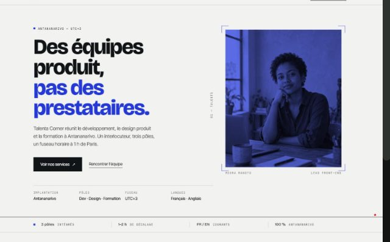
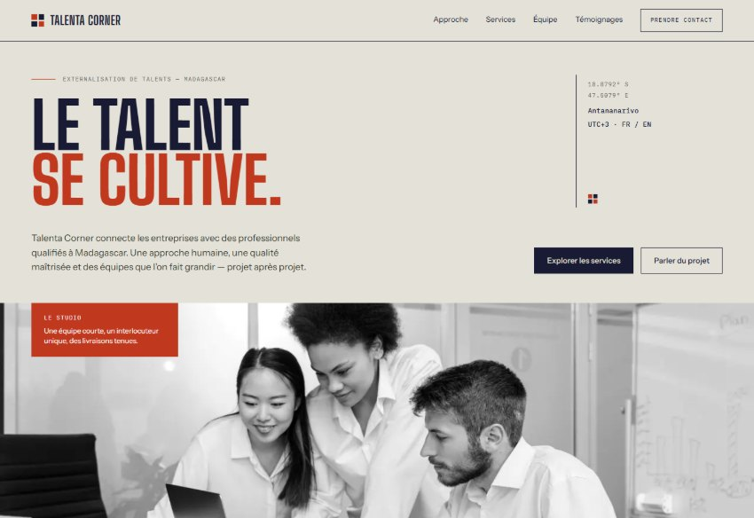
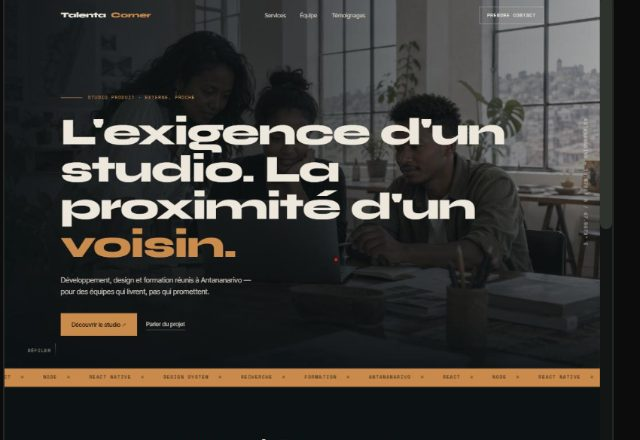

Talenta Corner · Parcours développeur ReactJS
Tâche 2 · Planification du projet et conception architecturale
Feuille de route, architecture React, composants réutilisables, stratégie responsive et intégration d'un CMS headless — pour un site portfolio qui grandit avec l'entreprise.
01 — Contexte et objectifs
Talenta Corner est une plateforme d'externalisation basée à Antananarivo : programmes de développement des talents, formation en entreprise et conseil. Ses clients sont des PME qui cherchent des compétences sans les surcoûts d'une grande structure.
Le site doit remplir trois missions : présenter l'offre en moins d'une minute, inspirer confiance (visages, témoignages, ancrage humain), et pouvoir être mis à jour par l'équipe sans intervention technique. Le contenu éditorial (services, profils, citations) change plus souvent que le design : il doit donc vivre dans un CMS, pas dans le code.
| Objectif | Critère de réussite |
|---|---|
| Lisibilité mobile | Aucun débordement horizontal à 360 px ; cibles tactiles ≥ 44 px |
| Performance | Chargement complet < 4 s en Slow 3G ; poids initial < 200 Ko |
| Autonomie éditoriale | Ajouter ou modifier un service sans toucher au code |
| Résilience | Le site reste utilisable si le CMS est indisponible |
| Référencement | Titre, description, Open Graph et JSON-LD valides |
02 — Feuille de route
| # | Étape | Livrable | Décision clé |
|---|---|---|---|
| 1 | Compréhension de l'entreprise | Réponses argumentées | S'aligner sur la mission : développement des talents |
| 2 | Planification et architecture | Ce document | Composants réutilisables + contenu piloté par CMS |
| 3 | Développement de l'interface | Composants React | CSS pur, mobile-first, accessibilité native |
| 4 | Intégration du CMS | Sanity + requête GROQ | Contenu local de secours si l'API tombe |
| 5 | Performance et SEO | Optimisations mesurées | Polices locales, image responsive, code splitting |
| 6 | Déploiement et présentation | Site en ligne + vidéo | Vercel, HTTPS, démonstration du CMS |
03 — Pistes explorées
Trois partis pris ont été maquettés avec les mêmes contenus et les mêmes sections avant d'écrire la moindre ligne de code. Ils ont été comparés sur quatre critères : lisibilité de l'offre, ancrage malgache, tenue sur mobile et coût de mise en œuvre.

Écartée
Clair et cobalt, cadres d'imprimé. Très lisible, mais registre « agence tech » déjà vu et grille de cartes éloignée du ton humain demandé.

Retenue
Pierre, indigo, vermillon ; fils verticaux et titres condensés. La métaphore du tissage relie les trois métiers ; texture en CSS, sans image lourde.

Écartée
Fond sombre et photo plein cadre, accents ambre. Impact immédiat, mais lecture longue fatigante, contraste plus fragile et image coûteuse sur 3G.
04 — Architecture React
Le site est une page unique : l'utilisateur doit comprendre l'offre sans naviguer entre dix écrans. L'architecture sépare donc trois responsabilités : l'acquisition de contenu (CMS ou secours local), la présentation (composants), et les comportements transverses (révélation, précache).
useContent() retourne un objet unique { site, services, team, testimonials }. Au montage, le contenu local s'affiche immédiatement ; si le CMS est configuré, la requête GROQ le remplace. Les composants ne savent jamais d'où vient la donnée.
useReveal() observe l'entrée d'une section dans le viewport et respecte prefers-reduced-motion. usePrefetch() précache le bloc témoignages au survol ou pendant un temps mort.
05 — Composants réutilisables
Chaque composant reçoit ses données en propriétés et n'appelle jamais l'API lui-même : il reste testable, réutilisable et indépendant du CMS.
| Composant | Propriétés | Réutilisation |
|---|---|---|
| SectionHead (motif) | index, title, em | Titres des sections Services, Équipe, Témoignages, Contact |
| ServiceCard (dans Services) | title, summary, points[] | Un « fil » par service, nombre variable |
| Team row (dans Team) | name, role, bio, index | Registre équipe, extensible à n profils |
| TestimonialCarousel | testimonials[] | Carrousel accessible, navigation clavier |
| Knot (motif) | className | Marque : nav, repères du hero, favicon |
| Button (classes .btn) | variantes ink / line / light / ghost-light | Tous les appels à l'action |
06 — Stratégie responsive
La majorité des visiteurs de PME arrivent depuis un téléphone. La feuille de style commence donc par le mobile et ajoute des colonnes à partir de 880 px, puis resserre la grille et les marges à 1024 px.
| Élément | Mobile (< 880 px) | Desktop (≥ 880 px) |
|---|---|---|
| Navigation | Bouton + panneau déroulant (Échap ferme) | Liens alignés + CTA |
| Hero | Une colonne, repères repliés | Deux colonnes : titre / repères de coordonnées |
| Bandeau studio | Plein cadre, légende en bas | Pleine largeur, légende alignée sur la grille |
| Services | Empilés | Trois fils côte à côte (≥ 1024 px) |
| Équipe | Registres empilés | Registre à quatre colonnes : index, nom, bio, rôle |
| Témoignage | Citation + navigation en bas | Marque en colonne + citation large |
| Images | srcset 800 px | srcset 1280 px |
Points spécifiques au mobile : viewport-fit=cover et zones sûres pour l'encoche, cibles tactiles de 44 px minimum, touch-action: manipulation pour supprimer le délai de 300 ms, et états de survol limités aux appareils à pointeur fin.
07 — Intégration du CMS
Sanity est un CMS headless : il stocke le contenu et l'expose en JSON via une API. Aucun serveur applicatif à maintenir, pas de base de données à administrer, et un studio d'édition en React fourni.
| Schéma | Champs | Utilisé par |
|---|---|---|
| service | title, summary, points[], order | Section Services |
| member | name, role, bio, order | Section Équipe |
| testimonial | quote, author, company, order | Carrousel Témoignages |
| siteSettings | tagline, intro, email, pillars[] | Hero, Mission, Contact |
08 — Performance et SEO
| Levier | Effet mesuré |
|---|---|
| Polices auto-hébergées, sous-ensemblées, préchargées | Aucune requête externe ; texte au bon style dès le premier rendu |
| Image d'ouverture en WebP responsive | 31 Ko servis en mobile au lieu de 110 Ko |
| Code splitting (témoignages, client Sanity) | Bundle initial à 51 Ko compressés, React compris |
| Prefetch au survol / temps mort | Section témoignages instantanée au clic |
| Métadonnées + JSON-LD | Aperçu riche au partage, éligibilité aux encarts enrichis |
Slow 3GCPU ×4
| Indicateur | Valeur |
|---|---|
| TTFB | 0,40 s |
| Événement load | ≈ 3,4 s |
| Contenu visible (LCP) | 3,9 – 4,0 s |
| Poids transféré | ≈ 167 Ko · 9 requêtes |
09 — Choix écartés
| Option | Pourquoi elle a été écartée |
|---|---|
| Next.js / rendu serveur | Site vitrine à page unique : le SSR apporte peu, complexifie le déploiement et les coûts d'hébergement. À reconsidérer si des pages CMS multiples indexables apparaissent. |
| WordPress headless | Crédible, mais impose un hébergement PHP + plugins de sécurité. Sanity supprime cette charge. |
| Bibliothèque UI (Tailwind, MUI) | Le design « Tissage » est spécifique ; une bibliothèque aurait ajouté du poids et imposé ses composants. |
| Formulaire de contact serveur | Hors périmètre : le brief demande la présentation des services, pas la gestion commerciale d'un formulaire. Un mailto: suffit au lancement. |
| Framer Motion / animations lourdes | Le site doit rester rapide sur 3G ; des transitions CSS suffisent. |
10 — Risques et suites
| Risque | Mesure |
|---|---|
| CMS indisponible | Fallback local ; le site ne dépend jamais de l'API pour s'afficher |
| Contenu mal saisi | Validation des schémas (longueurs, e-mail, champs obligatoires) |
| Croissance du contenu | Une requête GROQ unique ; pagination possible si le volume augmente |
| SEO limité par le JS | Métadonnées et JSON-LD présents dans le HTML initial ; passage au SSG si nécessaire |
Suite logique : formulaire de contact avec service d'envoi, studio Sanity déployé en ligne, tests automatisés des composants, statistiques de visites.